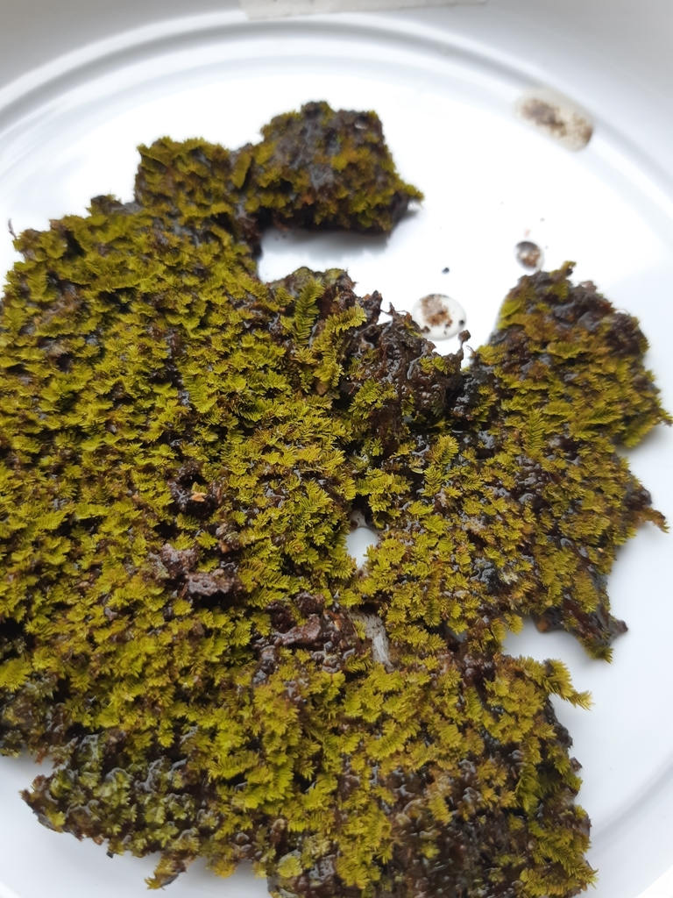

Helicophyllaceae
(Helicophyllum Moss Family)
Helicophyllaceae is a monotypic family of acrocarpous mosses, containing the single genus and species, Helicophyllum torquatum. This unique moss is found in seasonally dry tropical habitats in the Neotropics, typically growing on rock or soil. It is immediately recognizable by its leaves, which, when dry, strongly coil inwards from the apex like a spring or corkscrew.
Overview
The Helicophyllaceae family, represented solely by Helicophyllum torquatum, occupies a unique niche both morphologically and ecologically. It is distributed throughout the Neotropics, from Mexico and the Caribbean south to Brazil and Bolivia, favouring seasonally dry tropical forests, woodlands (like Caatinga), and scrublands. It typically grows on rock outcrops (often sandstone), but also on thin soil over rock or occasionally at the base of trees.
The most striking feature is the dramatic coiling of the leaves upon drying. While many mosses twist or curl when dry, the inward coiling from the leaf tip seen in Helicophyllum is highly distinctive. This is likely an adaptation to reduce water loss during dry periods in its seasonally arid environment. The plants form dense, often yellowish-green to brownish tufts or cushions. When moist, the leaves spread out, revealing their oblong-lanceolate shape and papillose surface.
Sporophytes are relatively common and feature erect, symmetric capsules on moderately long setae, with a single peristome similar to those found in families like Pottiaceae or Dicranaceae. The family's phylogenetic placement is uncertain, often considered near Pottiales or potentially representing its own isolated lineage (Helicophyllales).
Quick Facts
- Scientific Name: Helicophyllaceae
- Common Name: (Helicophyllum Moss Family)
- Number of Genera: 1 (Helicophyllum)
- Number of Species: 1 (Helicophyllum torquatum)
- Distribution: Neotropical (Mexico to Brazil/Bolivia).
- Habitat: Seasonally dry tropical forests/scrublands; primarily on rock, also soil/tree bases.
- Evolutionary Group: Bryophytes - Mosses (Class: Bryopsida, Order: Uncertain - Helicophyllales / near Pottiales?)
Key Characteristics
Growth Form and Habit
Plants are acrocarpous, forming dense tufts or cushions, typically small to medium-sized (stems often 1-3 cm tall). Color is usually yellowish-green to light brown or reddish-brown.
Stems
Stems are erect, usually branched, often with rhizoids at the base.
Leaves
Leaves are crowded, erect-spreading to squarrose (spreading at nearly 90°) when moist. The most distinctive feature occurs upon drying: the upper part of the leaf strongly coils or curls inwards from the apex towards the base, resembling a spring or corkscrew. Leaves are typically oblong-lanceolate from a broader, somewhat sheathing base, often concave. The costa (midrib) is single and strong, usually percurrent or shortly excurrent. Leaf margins are typically plane or slightly recurved below, often crenulate or denticulate above due to projecting papillae. Leaf cells are small, quadrate to shortly rectangular or rounded, firm-walled, and densely covered with multiple small papillae per cell (pluripapillose).
Asexual Reproduction
Asexual reproduction may occur via fragmentation, but specialized propagules are not typically reported.
Sporophytes (Reproductive Structures)
Sporophytes are terminal on main stems. The capsule is elevated on a moderately long (often 5-15 mm), smooth, yellowish to reddish seta. The capsule is typically erect, symmetric, ovoid to short-cylindric, and smooth-walled. The peristome is single (haplolepidous), consisting of 16 lanceolate, papillose teeth, which are sometimes perforated or irregularly divided near the tips (similar to types found in Pottiales or Dicranales). The operculum (lid) is conic to rostrate (beaked).
Habitat
Found in seasonally dry tropical forests, woodlands, and scrublands. Grows primarily on rock (often sandstone or other non-calcareous types), but also on thin soil over rock or occasionally on the lower trunks or bases of trees.
Field Identification
Identifying Helicophyllaceae (Helicophyllum torquatum) is primarily based on observing the unique way the leaves behave when dry, combined with its habitat and acrocarpous nature.
Primary Identification Features
- Dry Leaf Behavior (Key Feature): Leaves strongly coil or curl inwards from the apex when dry, resembling tiny springs or corkscrews. This is highly distinctive.
- Habitat: Seasonally dry tropical forests/scrublands, typically on rock or thin soil over rock.
- Growth Habit: Acrocarpous, forming dense tufts or cushions.
- Leaf Cells (Microscopic): Densely papillose.
Secondary Identification Features
- Leaves When Moist: Spreading to squarrose, oblong-lanceolate, strong costa.
- Sporophytes (if present): Erect, ovoid/cylindric capsules on moderately long setae.
Seasonal Identification Tips
- Dry Season: The characteristic leaf coiling is most apparent during dry periods, making identification easier.
- Wet Season: Plants will be hydrated with spreading leaves; look for the habitat and overall tufted appearance, then observe drying behavior if possible.
- Sporophyte Timing: Sporophytes likely mature following rainy seasons.
Common Confusion Points
The unique leaf coiling distinguishes Helicophyllum from most other mosses.
- Pottiaceae (e.g., Tortula, Syntrichia): Many grow in similar dry habitats on rock/soil and have papillose cells. However, their dry leaves typically twist around the stem axis, become incurved, or contorted in various ways, but do not coil distinctly inwards from the apex like Helicophyllum.
- Tortellaceae (e.g., Tortella): Leaves often strongly crisped and contorted when dry, but typically twisting around the stem, not coiling from the apex. Cells often papillose.
- Grimmiaceae: Grow on rock, but leaves are not coiled this way, often have hyaline hair-points, and different cell structure.
Observing the unique inward coiling of the dry leaves from the apex is the key to identifying Helicophyllaceae.
Field Guide Quick Reference
Look For:
- Habitat: Dry tropical rock/soil
- Acrocarpous tufts/cushions
- Leaves strongly coiled inwards from apex when dry (Key!)
- Leaves oblong-lanceolate, strong costa
- Leaf cells densely papillose
- Capsule erect, ovoid/cylindric on moderate seta
Key Variations:
- Only one species, limited variation
- Intensity of coiling
- Plant color (yellowish to brownish)
Notable Examples
The family contains only one species:

Helicophyllum torquatum
(No standard common name)
The sole representative of the family Helicophyllaceae. This Neotropical moss is found in seasonally dry habitats, primarily on rock. It is uniquely identified by its leaves which strongly coil inwards from the apex upon drying. The leaf cells are densely papillose, and the erect capsules are borne on moderately long setae.
Phylogeny and Classification
Helicophyllaceae belongs to the class Bryopsida. Its highly distinctive morphology, particularly the leaf coiling, and uncertain affinities have led to debates about its ordinal placement. Based on features like the papillose leaf cells and the structure of the single peristome, it has often been considered related to the large order Pottiales, which includes many mosses adapted to dry environments.
However, its unique combination of characters has also led some classifications to place it in its own monotypic order, Helicophyllales, suggesting it represents an isolated lineage. Molecular phylogenetic studies are needed to fully resolve its position, but current evidence often points towards a relationship within or near the Pottiales complex within the subclass Dicranidae or possibly Bryidae.
Position in Plant Phylogeny
- Kingdom: Plantae
- Division: Bryophyta (Mosses)
- Class: Bryopsida
- Subclass: Dicranidae / Bryidae (?)
- Order: Helicophyllales / Pottiales (?)
- Family: Helicophyllaceae
Evolutionary Significance
Helicophyllaceae, though comprising only one species, is significant for:
- Unique Morphological Adaptation: The apical coiling of dry leaves is a remarkable and highly specialized mechanism likely related to desiccation tolerance or protection of the growing point.
- Adaptation to Seasonally Dry Tropics: Represents a successful lineage adapted to challenging tropical environments with distinct wet and dry seasons.
- Phylogenetic Puzzle: Its uncertain taxonomic position highlights the diversity of evolutionary pathways within Bryopsida and the need for further research to resolve relationships among certain lineages.
- Biogeography: Its Neotropical distribution contributes to understanding bryophyte diversity patterns in that region.